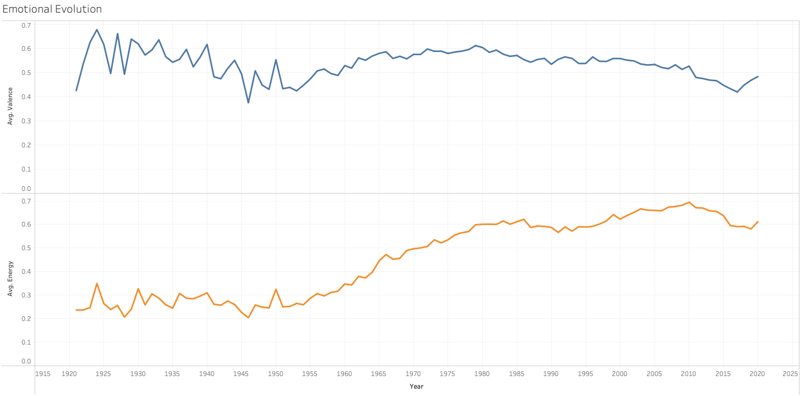
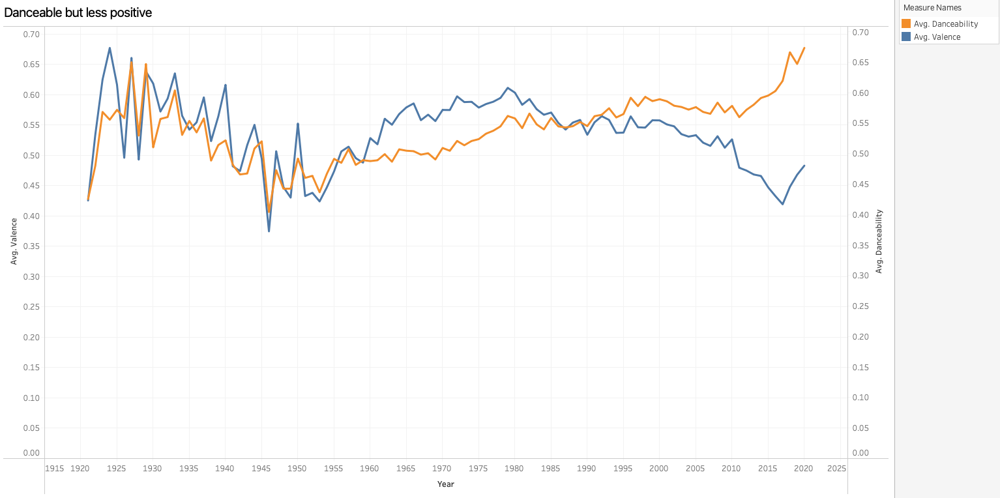

Data Case Study
From Happiness to Intensity
How the emotional architecture of music changed across a century, and what that means for better analytical decisions.
Caso di Studio sui Dati
Dalla Felicità all'Intensità
Come è cambiata l'architettura emotiva della musica nell'arco di un secolo, e cosa significa per decisioni analitiche migliori.
Overview
Case study at a glance
I started with a simple idea: music contains measurable emotional signals. If those signals changed over a century, could the pattern reveal something useful about cultural change, and could it support better decisions in playlist design, catalog strategy, or recommendation systems?
The challenge was to make the analysis psychologically meaningful without making claims the data couldn't support. The dataset describes tracks, not listeners. Every insight had to separate three things: what changed in the music, what psychology can plausibly help interpret, and what would require user-level behavioral data.
Problem
Turn a large historical audio dataset into a coherent story about emotional change, then translate that story into business-relevant decisions.
My Role
Frame research questions, clean and validate the data, engineer emotional features, build Tableau views, stress-test the findings, and write the final narrative.
Dataset
Public Spotify collection covering 1921–2020. The cleaned Silver table contains 169,909 tracks and 22 analytical fields.
Quality Control
185 tracks had suspect valence values and were excluded from valence-based analysis, leaving 169,724 usable records.
Core Features
Valence, energy, danceability, loudness, tempo, duration, mode, acousticness, popularity, year, and artist.
Outcome
A psychology-informed data story plus business recommendations, with explicit guardrails around causality and confounding.
| Stage | Question | Why It Mattered |
|---|---|---|
| Evolution | How did valence and activation change? | Establish the century-long pattern. |
| Emotional Map | How did the four valence-energy quadrants shift? | Move beyond "happy vs. sad." |
| Market Signal | Which profiles look more popular today? | Test whether emotion relates to market appeal. |
| Validation | Do those effects survive time controls? | Avoid false business conclusions. |
| Psychology | What mechanisms could make negative/intense music useful? | Interpret carefully without claiming causality. |
Panoramica
Il caso di studio in breve
Sono partita da un'idea semplice: la musica contiene segnali emotivi misurabili. Se questi segnali fossero cambiati nell'arco di un secolo, lo schema avrebbe potuto rivelare qualcosa di utile sul cambiamento culturale, magari a supporto di decisioni migliori nella progettazione di playlist, nella strategia di catalogo o nei sistemi di raccomandazione.
La sfida era rendere l'analisi psicologicamente significativa senza fare affermazioni che i dati non potessero sostenere. Il dataset descrive brani, non ascoltatori. Ogni risultato doveva quindi separare tre cose: cosa è cambiato nella musica, cosa la psicologia può plausibilmente aiutare a interpretare, e cosa richiederebbe dati comportamentali a livello di singolo utente.
Problema
Trasformare un ampio dataset audio storico in una storia coerente sul cambiamento emotivo, e tradurre quella storia in decisioni rilevanti per il business.
Il Mio Ruolo
Definire le domande di ricerca, pulire e validare i dati, progettare le feature emotive, costruire le viste Tableau, mettere alla prova i risultati e scrivere la narrazione finale.
Dataset
Raccolta pubblica Spotify che copre il periodo 1921–2020. La tabella Silver pulita contiene 169.909 brani e 22 campi analitici.
Controllo Qualità
185 brani avevano valori di valence sospetti e sono stati esclusi dall'analisi basata sulla valence, lasciando 169.724 record utilizzabili.
Feature Principali
Valence, energy, danceability, loudness, tempo, durata, mode, acousticness, popolarità, anno e artista.
Risultato
Una storia sui dati informata dalla psicologia, insieme a raccomandazioni di business, con avvertenze esplicite su causalità e variabili confondenti.
| Fase | Domanda | Perché Contava |
|---|---|---|
| Evoluzione | Come sono cambiate valence e attivazione? | Stabilire lo schema di lungo periodo. |
| Mappa Emotiva | Come sono cambiati i quattro quadranti valence-energy? | Andare oltre "felice vs triste". |
| Segnale di Mercato | Quali profili sembrano più popolari oggi? | Verificare se l'emozione è legata al successo di mercato. |
| Validazione | Questi effetti resistono al controllo del tempo? | Evitare conclusioni di business sbagliate. |
| Psicologia | Quali meccanismi potrebbero rendere utile la musica negativa/intensa? | Interpretare con cautela senza rivendicare causalità. |
Method
From raw audio features to an emotional model
The analysis uses Spotify valence as a measure of positive-versus-negative musical tone, and energy as a measure of perceptual intensity. Energy is not a direct psychological arousal measure, so it's used here as an acoustic activation proxy.
Calm & Positive
Positive / low activationHappy & Energetic
Positive / high activationSad & Calm
Negative / low activationSad & Intense*
Negative / high activation*Referred to as "activated-negative" in the findings below, low valence doesn't uniquely mean sadness. A high-energy, low-valence track may communicate tension, anger, urgency, or cathartic intensity.
Analytical guardrails:
- Spotify popularity is a present-day metric, not the historical popularity of a song when it was released.
- Early years contain fewer tracks, so year-to-year volatility is less stable than in later decades.
- Audio features describe musical properties; they do not measure listener mood, personality, or intention.
- Associations were treated as associations. Where a pattern could be explained by release era, I tested that confounder before turning it into a business claim.
Metodo
Dalle audio feature grezze a un modello emotivo
L'analisi usa la valence di Spotify come misura del tono musicale positivo o negativo, e l'energy come misura dell'intensità percettiva. Energy non è una misura psicologica diretta dell'arousal, quindi viene usata qui come proxy acustico di attivazione.
Calm & Positive
Positiva / bassa attivazioneHappy & Energetic
Positiva / alta attivazioneSad & Calm
Negativa / bassa attivazioneSad & Intense*
Negativa / alta attivazione*Chiamato "activated-negative" nei risultati più avanti, una valence bassa non significa necessariamente tristezza. Un brano ad alta energy e bassa valence può comunicare tensione, rabbia, urgenza o intensità catartica.
Linee guida analitiche:
- La popolarità Spotify è una metrica attuale, non la popolarità storica di un brano al momento della sua uscita.
- I primi anni contengono meno brani, quindi la volatilità anno su anno è meno stabile rispetto ai decenni successivi.
- Le audio feature descrivono proprietà musicali; non misurano l'umore, la personalità o le intenzioni dell'ascoltatore.
- Le associazioni sono state trattate come associazioni. Dove uno schema poteva essere spiegato dall'epoca di uscita, ho testato quella variabile confondente prima di trasformarlo in un'affermazione di business.
Finding One
Music became more activated, not simply sadder
Prima Scoperta
La musica è diventata più attivata, non semplicemente più triste

Energy nearly doubled between 1960 and 2010, while valence moved in the opposite direction after its 1980 high. The important shift is the separation between activation and positivity: modern tracks remained highly activated even as their average positive tone weakened.
I interpreted the early decades cautiously because sample sizes were much smaller. The long-term direction after the middle of the century is much more stable than the jagged year-to-year movement in the 1920s and 1930s.
L'energy è quasi raddoppiata tra il 1960 e il 2010, mentre la valence si è mossa nella direzione opposta dopo il suo picco del 1980. Il cambiamento importante è la separazione tra attivazione e positività: i brani moderni sono rimasti molto attivati anche mentre il loro tono positivo medio si indeboliva.
Ho interpretato i primi decenni con cautela perché i campioni erano molto più piccoli. La direzione di lungo periodo dopo la metà del secolo è molto più stabile del movimento irregolare anno su anno degli anni '20 e '30.
Finding Two
Activated-negative music became a major part of the catalog
To see the shift more clearly, I split every track into four quadrants using valence and energy together. "Activated-negative" tracks sound emotionally negative but are physically intense, closer to tension, urgency, or catharsis than to quiet sadness (the dashboard label is "Sad & Intense," for readability).
Seconda Scoperta
La musica activated-negative è diventata una parte importante del catalogo
Per vedere il cambiamento più chiaramente, ho diviso ogni brano in quattro quadranti combinando valence ed energy. I brani "activated-negative" suonano emotivamente negativi ma sono fisicamente intensi, più vicini a tensione, urgenza o catarsi che a una tristezza silenziosa (l'etichetta sulla dashboard è "Sad & Intense", per leggibilità).
| Year | Calm + Positive | Happy + Energetic | Sad + Calm | Activated-negative |
|---|---|---|---|---|
| 1960 | 32.8% | 21.9% | 43.3% | 2.0% |
| 1980 | 13.9% | 51.6% | 19.6% | 15.0% |
| 2015 | 4.6% | 35.3% | 19.7% | 40.4% |
| 2020 | 7.2% | 40.5% | 15.7% | 36.6% |
The biggest structural change is the rise of low-valence, high-energy music. It represented only 2.0% of tracks in 1960, but 36.6% in 2020, about eighteen times the earlier share. Calm & Positive moved in the opposite direction, from 32.8% to 7.2%.
| Anno | Calm + Positive | Happy + Energetic | Sad + Calm | Activated-negative |
|---|---|---|---|---|
| 1960 | 32,8% | 21,9% | 43,3% | 2,0% |
| 1980 | 13,9% | 51,6% | 19,6% | 15,0% |
| 2015 | 4,6% | 35,3% | 19,7% | 40,4% |
| 2020 | 7,2% | 40,5% | 15,7% | 36,6% |
Il cambiamento strutturale più grande è la crescita della musica a bassa valence e alta energy. Rappresentava solo il 2,0% dei brani nel 1960, ma il 36,6% nel 2020, circa diciotto volte la quota precedente. Calm & Positive si è mossa nella direzione opposta, dal 32,8% al 7,2%.
Finding Three
Music learned to move more without necessarily becoming happier
Terza Scoperta
La musica ha imparato a muoversi di più senza diventare necessariamente più felice

The divergence is visually clear: the tracks became increasingly movement-friendly while their average positive tone declined. The correlation is descriptive, not causal, but it captures a useful product insight, emotional negativity does not imply low physical activation.
The psychology lens
| Psychological Lens | What the Literature Helps Explain |
|---|---|
| Valence × activation | Russell's Circumplex Model organizes affect by pleasantness and arousal; Spotify energy is used here only as an acoustic activation proxy. |
| Mood regulation | Listeners use music to regulate both mood and activation, so high-energy music can be useful even when valence is negative. |
| Pleasurable sadness | Sad music can support consolation, nostalgia, empathy, and the rewarding experience of being moved. |
| Arousal matching | For some listeners, intense negative music can match high arousal and support emotional processing rather than simply intensifying anger. |
Interpretation boundary: these mechanisms make activated-negative music psychologically plausible and useful, but they do not prove that psychology caused the historical increase in this dataset.
La divergenza è visivamente chiara: i brani sono diventati sempre più adatti al movimento mentre il loro tono positivo medio calava. La correlazione è descrittiva, non causale, ma coglie un'intuizione di prodotto utile, la negatività emotiva non implica una bassa attivazione fisica.
La lente psicologica
| Lente Psicologica | Cosa Aiuta a Spiegare la Letteratura |
|---|---|
| Valence × attivazione | Il Circumplex Model di Russell organizza l'affetto secondo piacevolezza e arousal; l'energy di Spotify è usata qui solo come proxy acustico di attivazione. |
| Regolazione dell'umore | Gli ascoltatori usano la musica per regolare sia l'umore che l'attivazione, quindi la musica ad alta energy può essere utile anche quando la valence è negativa. |
| Tristezza piacevole | La musica triste può favorire consolazione, nostalgia, empatia e la gratificante esperienza di "essere commossi". |
| Arousal matching | Per alcuni ascoltatori, la musica negativa intensa può corrispondere a un arousal elevato e supportare l'elaborazione emotiva invece di intensificare semplicemente la rabbia. |
Confine interpretativo: questi meccanismi rendono la musica activated-negative psicologicamente plausibile e utile, ma non dimostrano che la psicologia abbia causato l'aumento storico osservato in questo dataset.
Finding Four
The chart that almost told the wrong business story
The raw popularity view looked decisive: Activated-negative tracks had the highest average present-day Spotify popularity. If I had stopped at the dashboard, the conclusion would have been that listeners prefer activated-negative music.
| Emotional Profile | Raw Mean Popularity | Difference vs. Calm + Positive, After Controlling for Year |
|---|---|---|
| Calm + Positive | 18.91 | Reference |
| Happy + Energetic | 40.00 | +0.70 |
| Sad + Calm | 24.39 | −0.03 |
| Activated-negative | 46.29 | +0.15 |
Happy & Energetic
Activated-negative
What changed after validation
Once release year was controlled, the large apparent advantage almost disappeared. Recent tracks are both more likely to be activated-negative and structurally advantaged by Spotify's current popularity metric. The same pattern appears within decades, in the 2010s, all four emotional quadrants averaged roughly 59–60 popularity points. Emotional profile is useful for segmentation, but it is not a strong standalone explanation of current popularity.
Quarta Scoperta
Il grafico che ha quasi raccontato la storia di business sbagliata
La vista sulla popolarità grezza sembrava decisiva: i brani activated-negative avevano la popolarità media attuale più alta su Spotify. Se mi fossi fermata alla dashboard, la conclusione sarebbe stata che gli ascoltatori preferiscono la musica activated-negative.
| Profilo Emotivo | Popolarità Media Grezza | Differenza vs. Calm + Positive, Dopo il Controllo per Anno |
|---|---|---|
| Calm + Positive | 18,91 | Riferimento |
| Happy + Energetic | 40,00 | +0,70 |
| Sad + Calm | 24,39 | −0,03 |
| Activated-negative | 46,29 | +0,15 |
Happy & Energetic
Activated-negative
Cosa è cambiato dopo la validazione
Una volta controllato l'anno di uscita, il grande vantaggio apparente è quasi scomparso. I brani recenti hanno più probabilità di essere activated-negative e sono strutturalmente avvantaggiati dall'attuale metrica di popolarità di Spotify. Lo stesso schema appare all'interno dei singoli decenni, negli anni 2010, tutti e quattro i quadranti emotivi avevano in media circa 59–60 punti di popolarità. Il profilo emotivo è utile per la segmentazione, ma non è una spiegazione autonoma solida della popolarità attuale.
Supporting Evidence
Secondary signals that sharpened the story
Ambiguity Returned
The Ambiguity Score reached a low of about 0.711 in 1975 and rose to about 0.978 by 2020. Modern tracks increasingly combine cues that don't point in one emotional direction.
Major ≠ Automatically Happier
Major-mode mean valence was 0.535 versus 0.527 for minor mode. The difference was only 0.0085 (Cohen's d = 0.033), and the yearly gap repeatedly crossed zero.
Tracks Became Shorter
Average duration fell from about 4.44 minutes in 1976 to 3.29 minutes in 2020, a 26% decline from the peak.
Tracks Became Louder
Average loudness moved from −13.73 dB in 1960 to −6.67 dB in 2010, reinforcing the broader rise in activation and production intensity.
Prove a Supporto
Segnali secondari che hanno affinato la storia
L'Ambiguità È Tornata
L'Ambiguity Score ha raggiunto un minimo di circa 0,711 nel 1975 ed è salito a circa 0,978 nel 2020. I brani moderni combinano sempre più spesso segnali che non puntano in un'unica direzione emotiva.
Maggiore ≠ Automaticamente Più Felice
La valence media del modo maggiore era 0,535 contro 0,527 del modo minore. La differenza era solo 0,0085 (Cohen's d = 0,033), e il divario annuale attraversava ripetutamente lo zero.
I Brani Sono Diventati Più Corti
La durata media è scesa da circa 4,44 minuti nel 1976 a 3,29 minuti nel 2020, un calo del 26% rispetto al picco.
I Brani Sono Diventati Più Forti
Il loudness medio è passato da −13,73 dB nel 1960 a −6,67 dB nel 2010, rafforzando la crescita più ampia di attivazione e intensità produttiva.
Business Value
Turning the analysis into business decisions
The project is most useful when audio features are treated as a language for segmentation and product design, not as a shortcut to "hit prediction."
| Decision Area | What the Analysis Supports | What to Avoid |
|---|---|---|
| Playlist design | Use valence + energy together to distinguish calm, uplifting, reflective, and activated-negative experiences. | Treating all low-valence music as one mood. |
| Catalog strategy | Use emotional profiles to identify how a catalog is distributed and how that mix changed over time. | Assuming the largest current segment is automatically the best investment. |
| Recommendation context | Use activation and valence as contextual features alongside artist, genre, session, and behavior. | Predicting preference from audio features alone. |
| Popularity modeling | Use time-aware controls and temporal validation. | Using present-day popularity as if it were historical success at release. |
What I would build next: audio + lyrics + behavior
The next version should connect acoustic emotion to lyrical sentiment and actual listener outcomes, the point where the project can move from describing cultural change to predicting human behavior.
Lyrics
Positive emotion, sadness, anger, anxiety, self-focus, social connectedness, and audio-lyric congruence.
Behavior
Skip, completion, replay, save, playlist add, session length, and next-track choice.
Context
Time of day, workout/study/sleep context, previous track, and optional mood self-report.
Modeling
Temporal validation, interaction effects, personalized preference profiles, and next-track prediction.
Valore per il Business
Trasformare l'analisi in decisioni di business
Il progetto è più utile quando le audio feature sono trattate come un linguaggio per la segmentazione e il product design, non come una scorciatoia per "prevedere un successo".
| Area Decisionale | Cosa Supporta l'Analisi | Cosa Evitare |
|---|---|---|
| Progettazione playlist | Usare valence + energy insieme per distinguere esperienze calme, positive, riflessive e activated-negative. | Trattare tutta la musica a bassa valence come un unico mood. |
| Strategia di catalogo | Usare i profili emotivi per capire come è distribuito un catalogo e come quel mix è cambiato nel tempo. | Assumere che il segmento attualmente più grande sia automaticamente il miglior investimento. |
| Contesto di raccomandazione | Usare attivazione e valence come feature di contesto insieme ad artista, genere, sessione e comportamento. | Prevedere le preferenze usando solo le audio feature. |
| Modellazione della popolarità | Usare controlli e validazione temporale. | Usare la popolarità attuale come se fosse il successo storico al momento dell'uscita. |
Cosa costruirei dopo: audio + testi + comportamento
La prossima versione dovrebbe collegare l'emozione acustica al sentiment dei testi e ai risultati reali degli ascoltatori, il punto in cui il progetto può passare dal descrivere il cambiamento culturale al prevedere il comportamento umano.
Testi
Emozione positiva, tristezza, rabbia, ansia, focus su di sé, connessione sociale e congruenza audio-testo.
Comportamento
Skip, completamento, riascolto, salvataggio, aggiunta a playlist, durata della sessione e scelta del brano successivo.
Contesto
Ora del giorno, contesto allenamento/studio/sonno, brano precedente e auto-dichiarazione facoltativa dell'umore.
Modellazione
Validazione temporale, effetti di interazione, profili di preferenza personalizzati e previsione del brano successivo.
Outcome
What this case study demonstrates
Data Engineering Mindset
Cleaning, quality flags, reliable time fields, and feature definitions before visualization.
Research Framing
Questions that connect descriptive analysis to business decisions without claiming more than the data can support.
Analytical Rigor
Confounder checks that changed the final conclusion instead of simply confirming the first visual pattern.
Data Storytelling
A narrative built around tension: more activation, less positivity, and a major rise in activated-negative music.
Interdisciplinary Reasoning
Psychological theory used as an interpretation layer, with a clear boundary between mechanism and causal proof.
Product Thinking
Recommendations that translate findings into segmentation, recommendation context, and the next data requirements for behavioral prediction.
Over a century, the emotional architecture of tracks in this Spotify dataset changed substantially. Music became more energetic, louder, increasingly danceable, and more likely to combine negative valence with high activation. Yet the apparent popularity advantage of that emotional profile largely disappeared once release year was controlled.
Limits I'd state on the website:
- This dataset is not a census of all music released worldwide.
- Spotify audio features are algorithmic descriptors, not direct measurements of human emotion.
- Popularity is current and time-dependent; it is not historical success at release.
- The analysis is observational and does not establish causal psychological effects.
- Genre, geography, marketing, playlist exposure, artist fame, and listener-level behavior are not controlled.
Risultato
Cosa dimostra questo caso di studio
Mentalità da Data Engineer
Pulizia, flag di qualità, campi temporali affidabili e definizioni delle feature prima della visualizzazione.
Impostazione della Ricerca
Domande che collegano l'analisi descrittiva alle decisioni di business senza affermare più di quanto i dati possano sostenere.
Rigore Analitico
Controlli sulle variabili confondenti che hanno cambiato la conclusione finale invece di limitarsi a confermare il primo schema visivo.
Data Storytelling
Una narrazione costruita attorno a una tensione: più attivazione, meno positività, e una forte crescita della musica activated-negative.
Ragionamento Interdisciplinare
Teoria psicologica usata come livello di interpretazione, con un confine chiaro tra meccanismo e prova causale.
Product Thinking
Raccomandazioni che traducono i risultati in segmentazione, contesto di raccomandazione e i prossimi dati necessari per la previsione comportamentale.
Nell'arco di un secolo, l'architettura emotiva dei brani in questo dataset Spotify è cambiata in modo sostanziale. La musica è diventata più energica, più forte, sempre più danceable, e più incline a combinare valence negativa con alta attivazione. Eppure l'apparente vantaggio di popolarità di quel profilo emotivo è in gran parte scomparso una volta controllato l'anno di uscita.
Limiti che dichiarerei sul sito:
- Questo dataset non è un censimento di tutta la musica pubblicata nel mondo.
- Le audio feature di Spotify sono descrittori algoritmici, non misurazioni dirette dell'emozione umana.
- La popolarità è attuale e dipendente dal tempo; non è il successo storico al momento dell'uscita.
- L'analisi è osservazionale e non stabilisce effetti psicologici causali.
- Genere, geografia, marketing, esposizione in playlist, fama dell'artista e comportamento a livello di singolo ascoltatore non sono controllati.
Curious About the Data Side?
I like it when the data disagrees with the obvious story.
If you've got a dataset everyone's already drawn conclusions from, I'd enjoy checking whether those conclusions hold up.
Curioso del Lato Dati?
Mi piace quando i dati contraddicono la storia ovvia.
Se hai un dataset da cui tutti hanno già tratto conclusioni, mi piacerebbe verificare se quelle conclusioni resistono davvero.